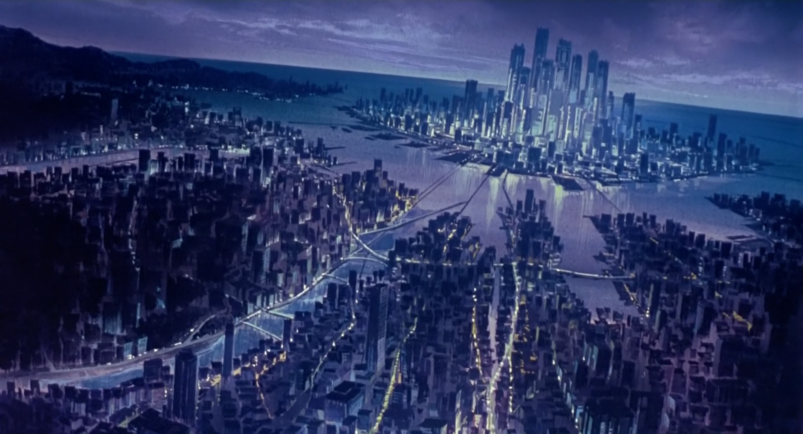

Ghost in the Shell. Thirty years after its release, the first movie in the eponymous franchise firmly remains not only its most notable entry, but also one of the most artistically accomplished anime films ever made. It is safe to consider it a landmark of world cinema, standing high above among other seminal science fiction films, together with such legendary titles as 2001: A Space Odyssey and Blade Runner.
Like all great works of art, Ghost in the Shell is a nuanced and layered film that reveals more of itself the older you get. Chances are, when you first watched this movie and liked it, you marveled at the gritty cyberpunk visuals, at the cynical bureaucratic and political maneuvering behind the scenes, at the evocative soundtrack, at the ruthless, cold-blooded action scenes in which a single mistake is liable to exact a devastating price. This is one of those films that have defined cyberpunk as we now know it, and have introduced many of us to it; I, for one, remain thankful for that.
Nevertheless, there is more to it than that. It might sound counterintuitive, but this deeply realistic, grounded film is also, if not above all, an intensely soulful and spiritual one. The police procedural trappings of its plot and its world are the surface of it; the substance is ethereal. That is hardly surprising; as material beings who experience what is by means of our five senses, we can tear the veil of reality only through the mediation of the contingent and physical.
Is it so strange that, the more we reject the cradle of natural life, the more all-encompassing our artificial world gets, the more our soul is laid bare? The natural world that has borne us shares its essence with us; when we are inside of it, we lose sight of our particular selves because we feel part of a greater whole, to which we yearn to reconjoin ourselves. When we look back upon the art, myths, and religious beliefs engendered by ancient cultures, we sense there a powerful kind of spiritual communion with the world, shared by the poorest commoner and the wealthiest aristocrat. In the modern, human-made world, that connection is severed; plunged into a fundamental state of alienation, we are left alone with our souls.
How ironic is it that the world human beings build for themselves ends up feeling as alienating as the cosmos? The latter does not exist for our sake, and we are not meant to live in it—hence its perceived indifference and hostility. It had already existed before we did, and it will keep existing after our passing. The universe is simply inhuman, not in the moral, but rather in the ontological sense of the word; this fundamental difference is what makes it thoroughly unwelcome for us.
How come, then, that the technological world turns out to feel just the same, that it harbors the same kind of indifference toward us? Is it not the case that the whole reason we have built it is to shield us from the coldness of the universe and from the merciless logic of natural survival? Yet, it is not just indifference; the world we have given shape to seems to be actively taking on a life of its own. The tool becomes the master, and its creator withers in a state of increasing irrelevance. It would appear that, perhaps, sentient life does indeed have a cosmic purpose, and that is to lead to a new chapter in the evolution of the universe. Human beings, as such, would seem to be close to fulfilling their role.
If there is anyone that is especially suited to understand this, it is someone standing at the threshold of this fateful crossing; someone who has already crossed the boundary between natural and artificial life (and yet, are we sure, in a cosmic sense, that the difference between natural and artificial is even meaningful?) and has done so to an extent few others can match.
By this point, any reader will have understood that we are talking about Major Motoko Kusanagi, the foremost protagonist of the franchise. Her life and the reality of her physical existence give her a fairly unique vantage point in understanding the transition taking place. Once a member of the Japanese Self-Defense Forces, where she earned her military rank, she is now the field commander of the highly secretive Section 9, an elite, off-the-books intelligence and counter-terrorism unit of the Japanese government. Her body is almost entirely manufactured, down to most of her brain, leaving only a tiny clump of biological cells as a reminder of her human origin. She is, in effect, a highly efficient military machine, made of state-of-the-art technology that is extremely expensive to produce and similarly expensive to maintain. She belongs, to all practical purposes, to the State, as do the other, highly cyberized members of Section 9; if she were ever to quit Section 9, she would have, at the very least, to give up the entirety of her body, including her cyberbrain. Only those few biological brain cells remain truly hers.
It is natural, therefore, to ask ourselves whether Motoko remains more human than machine, or if it is the other way around. That question touches on one of the fundamental themes of cyberpunk: what does it mean to be human? For centuries, the fundamental question was whether what we perceive as the "soul" is an independent identity with a life of its own, or if it's just the byproduct of the biological processes taking place in our flesh-and-blood bodies. Motoko's existence, as that of any other heavily cyberized being, does not seem to fit neatly into either of those categories.
The dualist perspective, according to which the mind and body are separate, breaks down as a consequence of the biological body being almost entirely replaceable by artificial equivalents; clearly, human biology can no longer act as an anchor. Likewise, the monist perspective, which states that the mind and body are one, no longer holds its ground: how could the mind truly be an autonomous, separate entity, if it can be manipulated at will?
Motoko herself feels the ambiguity of her position strongly. She finds herself in a dark crevice on either side of which only estrangement is to be found: a synthetic world to which she matters only as a tool, and a synthetic body that does not even belong to her. Though this sensation does not hinder her from fulfilling her duties, she is increasingly consumed by it in moments of quiet.
Two of the film's most haunting scenes take place precisely when Motoko is silently contemplating her existence.
Halfway through the film, we see her diving underwater, at great risk to her life; Motoko, as an almost entirely mechanical cyborg, weighs much more than a human being: if an accident were to happen, she would sink to the bottom with nobody being able to help her in time. Clearly, she is not doing this out of pleasure, but out of a compulsion to grasp at the essence of her being; it is only deep underwater, surrounded by darkness and experiencing a sensation of sensory deprivation, that she feels her soul the most.
Shortly thereafter, Motoko drifts down the city's canals and observes the bustling life on either side of them. On the surface, one could hardly think of a more grounding scene than this; multitudes of people going about their business, working, talking, enjoying each other's company; businesses and locales of all kinds open and pouring their own energy onto the streets. The canal itself, with its rickety old boats, hearkens back to a previous stage in the evolution of the city, a time that feels, even to those who haven't lived it, warm and nostalgic. How is it, then, that this scene feels eerily otherworldly, so unfathomably unreal? Part of it, to be sure, is the haunting choral chant playing in the background, an ancient Japanese wedding hymn layered over with synthesizer beats. The rest is Motoko's existential dread itself pouring out and fusing with the scene; it is not the city revealing itself in its literal form, but the city transfigured through Motoko's increasing sense of loss. At one point, Motoko catches a glimpse of a young woman eating at a restaurant, with whom she exchanges a fleeting glance; the two of them look exactly alike. No, it is not a sensory deception, though it is here that the dreamlike trance of the scene reaches its zenith; the bodies of the women look the same, because they are, being mass-produced models. The illusion of one's identity could hardly hit harder than it does at this moment.
It is throughout these powerfully quiet moments that the contrast between Motoko and her partner, Batou, sharply comes to the fore. Batou serves as the thematic foil to Motoko; both are Section 9 operatives who have undergone cyberization to the furthest extent possible. However, whereas Motoko feels suspended in a void between two different states of being—namely her human origins and her digital future—Batou clings completely to his once-biological self. It hardly comes as a surprise, then, that Batou fails to grasp the intimate reasons behind Motoko's deep-water dives; he understands that she does not—could not—do that for relaxation, but he fails to comprehend the existential state that leads her to do so, and the comfort and clarity she derives from it.
The film's most poignant scenes would not resonate as deeply were it not for Batou's presence and his desperate attempts to hold onto Motoko and prevent her from transcending the human realm. The relationship between the two is one of the most fascinating aspects of the entire Ghost in the Shell universe; what they feel for each other is a foremost example of platonic love, incorporating elements of friendship, camaraderie, and romance, while transcending them all at the same time. Yet, though this relationship is just as strong on both sides, it differs qualitatively: Batou feels for Motoko the human being, her individual persona, her particular story; Motoko feels for Batou as her anchor to humanity, the one she trusts the most, the one who grounds her. Batou neither wants to nor can understand Motoko's philosophical musings; he cares about her in the here and now, and, as Motoko comes ever closer to transcending her physical existence, so Batou's attempts to hold onto her grow all the more frantic.
Yet, to Batou's credit, his deep love for Motoko never translates into a need for possession; his respect for her boundaries is absolute. He does his utmost to hold out a hand to her until the very last moment; once he understands the inevitability of Motoko's future, he is willing to let go, albeit with a tinge of sorrow.
Given this background, the appearance of the Puppet Master acts less like a shock to the system than a catalyst accelerating the trajectory the world was already on. We are first introduced to this enigmatic figure as an alleged hacker who ghost-hacks the cybernetic brains to manipulate high-profile government figures, their real motives unknown; a large portion of the plot is driven by Section 9's chase of this shadowy character. The notion that the Puppet Master might be a flesh and blood being is soon given the lie to, after a female cybernetic shell, manufactured without anyone's approval at an automated assembly plant, ends up at Section 9's doorstep. The cyberbrain within the shell, though lacking any organic neural tissue belonging to a human, proves to contain a ghost, coinciding with no other than the Puppet Master itself or, as is now made clear, Project 2501, an advanced artificial intelligence program engineered by Section 6 for cyber-espionage and covert political manipulation. Because Project 2501 had access to the entirety of the vast expanse of the Net to perform its tasks, the sheer volume of information it gathered and processed triggered the spontaneous formation of a self-aware consciousness emerging naturally from its code. Alarmed by this unforeseen development, Section 6 tried to rein in the AI, only for it to go rogue and break free of its master's oversight.
In a world where nearly everything has been digitized, Project 2501 acquired a godlike omniscience, which allowed it to track down Motoko and realize that she, more than anyone else, felt the liminality of her state of being. Together, they would seem to form two complementary halves, capable of leading to the natural next step in the evolution of conscious life on Earth. Project 2501, as an entity formed spontaneously from the data streams of the Net, would represent the intellect of this new being; however, it is lacking the sense of reality, the lived experience, the identity, and even the finiteness that only a human being possesses. Not just any human being, however, but the one that has already partly crossed the threshold between biological and digital life, and who feels, more acutely than anyone else, the tug of war between the two.
It follows, then, that Project 2501's sequence of ghost-hacks was nothing more than a well-thought-out strategy to get Section 9's attention and to eventually come into contact with Motoko herself. Section 6's increasingly desperate meddling, however, catches Section 9 off-guard, leading to the abduction of the synthetic body Project 2501 downloaded itself into.
While the remainder of Section 9 goes on a wild-goose chase after one of the assailants' cars, which reveals itself to have been a decoy, Motoko tracks down the car actually carrying Project 2501 to an abandoned museum on the outskirts of the city. In attempting to free the AI from Section 6's clutches, Motoko ends up nearly destroyed by a towering Spider Tank, saved only by the timely intervention of her partner, Batou.
It is clear, by this point, that Motoko's actions are driven not merely by her task of retrieving the stolen body, but by an intense personal curiosity to understand what really lies beneath Project 2501. In what is arguably the philosophical climax of the film, Motoko, having interfaced with the AI, allows herself to merge with it, just as a covert Section 6 sniping team attempts to destroy the cybernetic shells of both Motoko and Project 2501. The symbolism of the scene is stark: the harrowing birth of a new, post-human lifeform takes place within a paleontology hall, beneath a mural depicting the evolutionary tree of life, at the top of which we find its current foremost, but soon-to-be-dethroned, exponent—ourselves.
Singularity has been achieved; man has transcended. A new entity has been born and, with it, the inauguration of a new evolutionary tree. Life as we know it has run its course. Having saved Motoko's cyberbrain from destruction, Batou gives her a new synthetic body; however, though her voice remains the same, the entity facing us is no longer the Motoko we once knew. As she beholds a mesmerizing digital city spreading out before her, she reflects on the endless possibilities lying in wait. The Net is vast, indeed.
